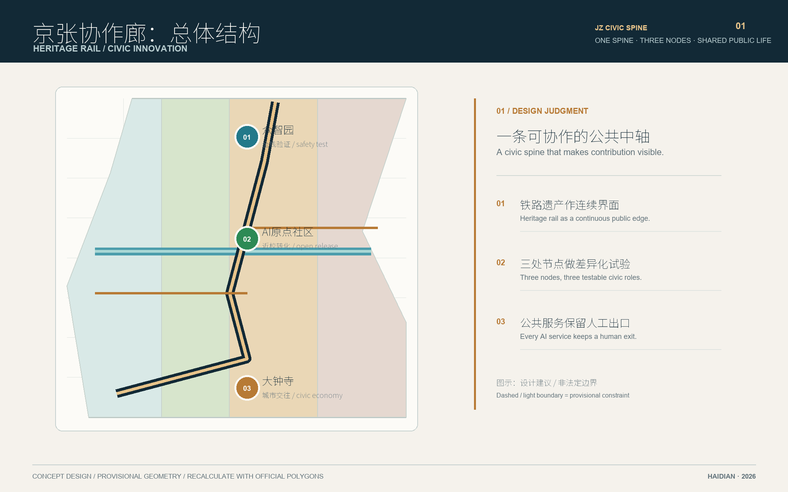
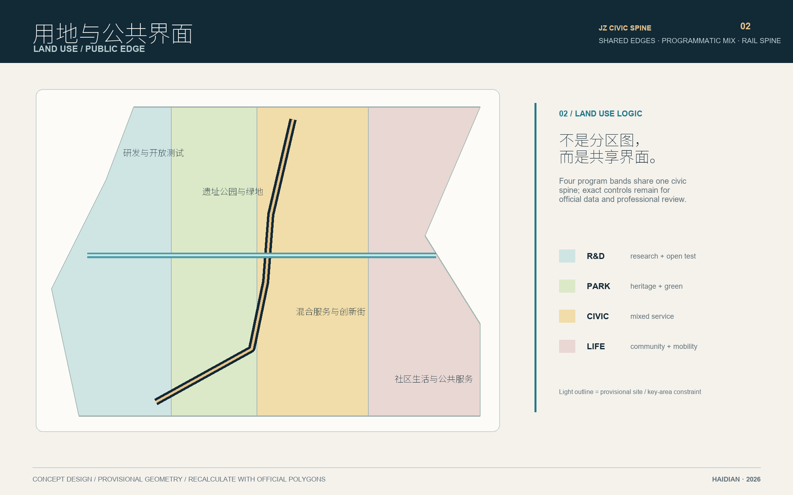
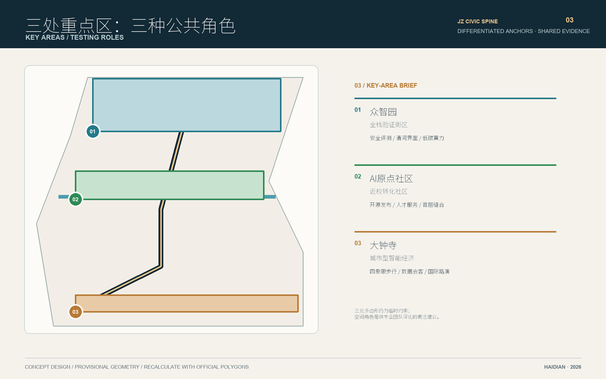
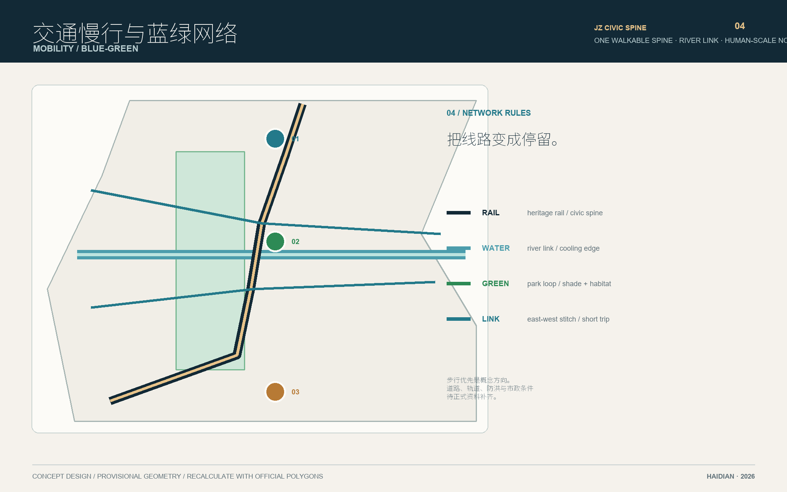
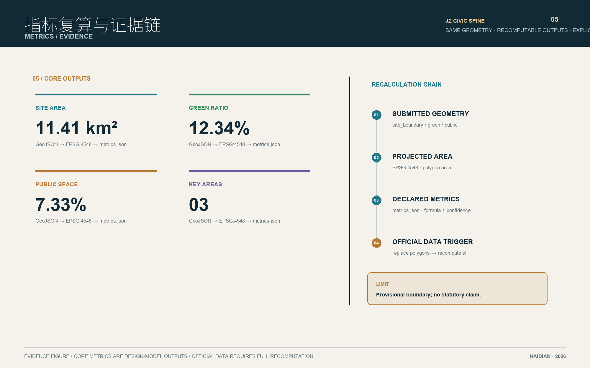

三层范围框架
研究范围承载区域协同，总体设计范围承载京张公共中轴，重点区域承载三处可验证的 AI 公共场景。
一条以铁路遗产为连续界面、以三处重点区为差异化试验节点的公共创新廊道。方案将空间建议、AI场景、人工复核和可撤回运营放在同一条可审计的证据链上。
Design judgment: 用一条公共中轴串联铁路遗产、蓝绿界面与三种城市创新角色。

统筹研究范围、总体设计范围、重点区域范围递进组织产业判断、城市更新和节点设计。
研究范围承载区域协同，总体设计范围承载京张公共中轴，重点区域承载三处可验证的 AI 公共场景。
边界和重点区多边形为 provisional constraint，仅用于展示、自检和概念讨论，正式资料发布后全包重算。
每张图均从提交 GeoJSON、指标和矩阵派生，保留图例、编号、设计判断与临时边界说明。

用地分区 / Land use structure

重点区域 / Key areas

交通慢行 · 蓝绿公共空间 / Mobility · Blue-green public space

指标与证据 / Metrics and evidence
设计模型输出，不替代正式测绘、规划许可或工程核验。
geometry/site_boundary.geojson
green_space / site boundary
public_space / site boundary
three provisional focus areas
三处重点区的建筑、公共空间和更新项目均是概念建议，待权属、消防、文保和工程资料确认。
分别承担安全验证、近校转化、城市交往三种公共角色，形成差异化而可协作的节点体系。
建筑图层与 JZ-01—JZ-08 项目包仅表达设计意图，不构成拆除、改造、招商或投资承诺。
面向专业团队的下一步深化入口。
确定性校验、空间复核、视觉包装和专业证据四道 Gate 均需 PASS；当前 provisional 边界提示为 minor，不阻断内容评分，但正式边界到位后必须重算。
结构化证据与可追溯限制。
compliance_matrix.json 覆盖公告任务与 agent.1—agent.6；standard_matrix.json 和 design_depth_matrix.json 记录专业标准及成果深度。
来源见 sources.json；官方边界、控规、道路红线、权属、市政、文保与运营资源等待补事项见 assumptions.json。任何背景或 provisional 资料均未升级为正式规划证据。